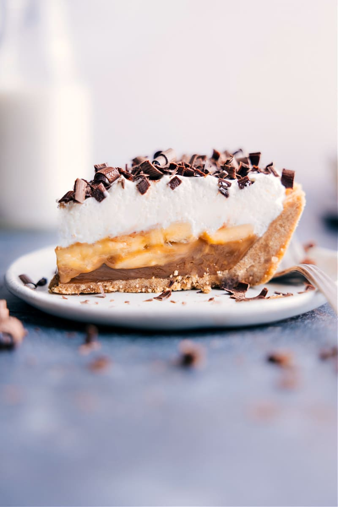

Banoffee Pie

Description
This is a decadent pie comprised of a graham cracker crust covered with fresh banana slices and dulce de leche, all topped with a sea of whipped cream.
This recipe is also very easy to make at home. Using simple, store-bought ingredients, this recipe can be whipped up in 20 minutes or less.
Ingredients
- 100g Butter, melted
- 225g Graham crackers, crushed
- 75g Butter
- 75g Dark brown soft sugar
- 397g Condensed milk
- 2 bananas, ripened
- 150ml whipping cream
Steps
- Using a whisk or electric mixer, whip the whipping cream until soft peaks form. Refrigerate.
- Thoroughly mix melted butter with crushed graham crackers. Press the mixture into the base and sides of a pie tin. Chill for 10 minutes.
- Place 75g butter and sugar into a non-stick saucepan over low heat, stirring constantly until the sugar has dissolved completely. Add condensed milk and bring to a rapid boil for roughly one minute, stirring constatly as a thick, golden caramel forms. Spread caramel over the base, then chill for one hour.
- Remove pie from tin, top with sliced bananas before topping entire pie with whipped cream. Chill until ready to serve.
- Optional: For the perfect finishing tough, gently dust top of pie with cocoa powder or grated chocolate.